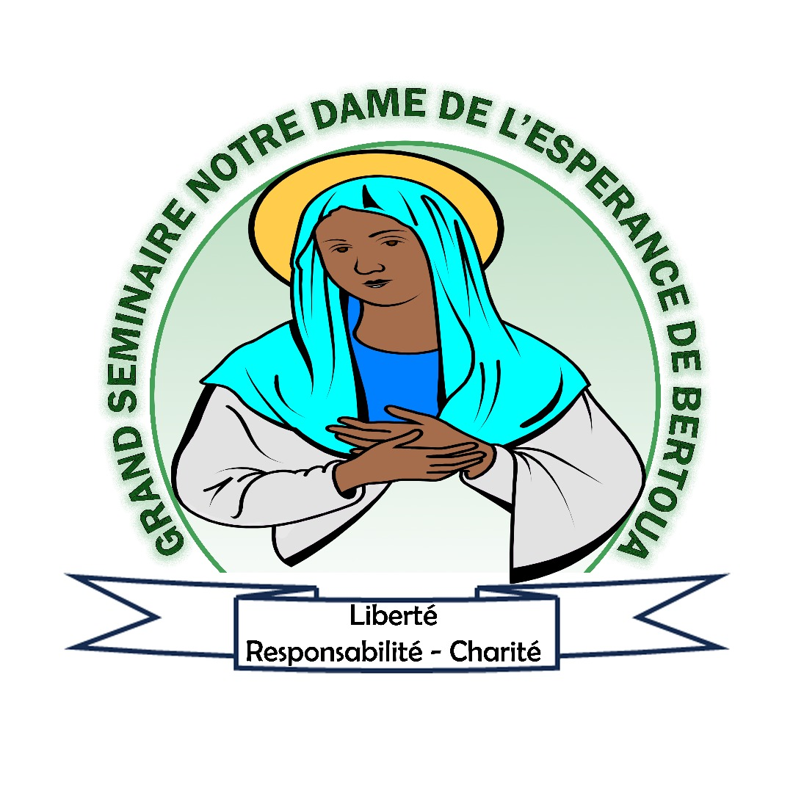
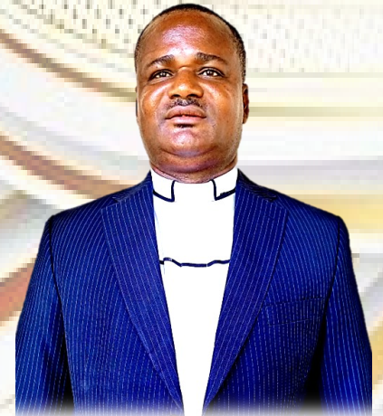
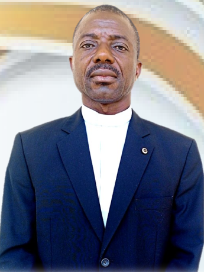
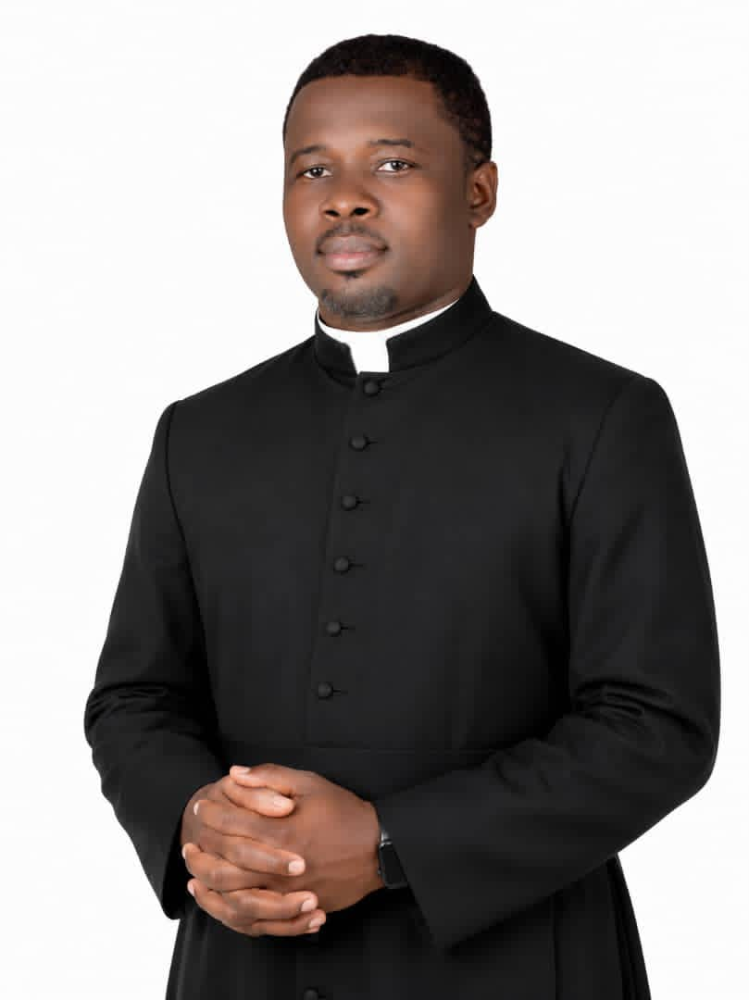
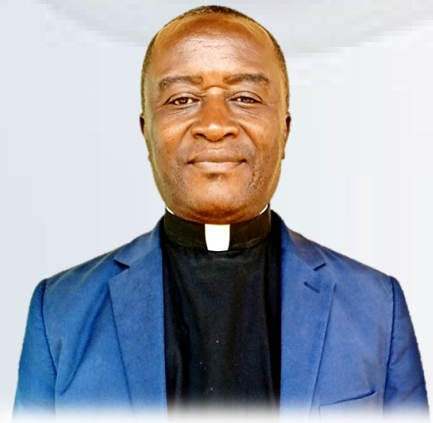
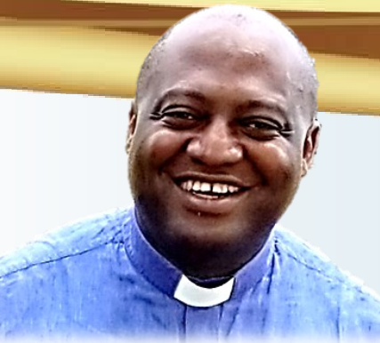
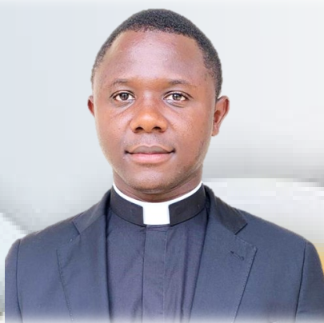
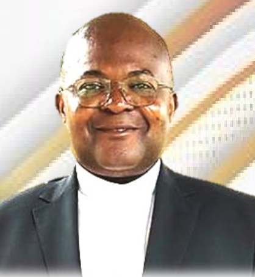
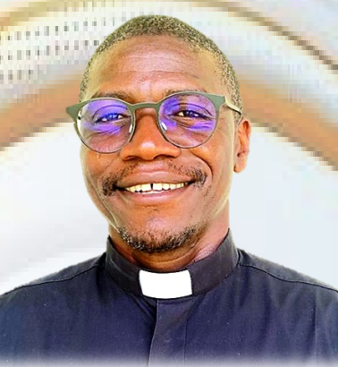
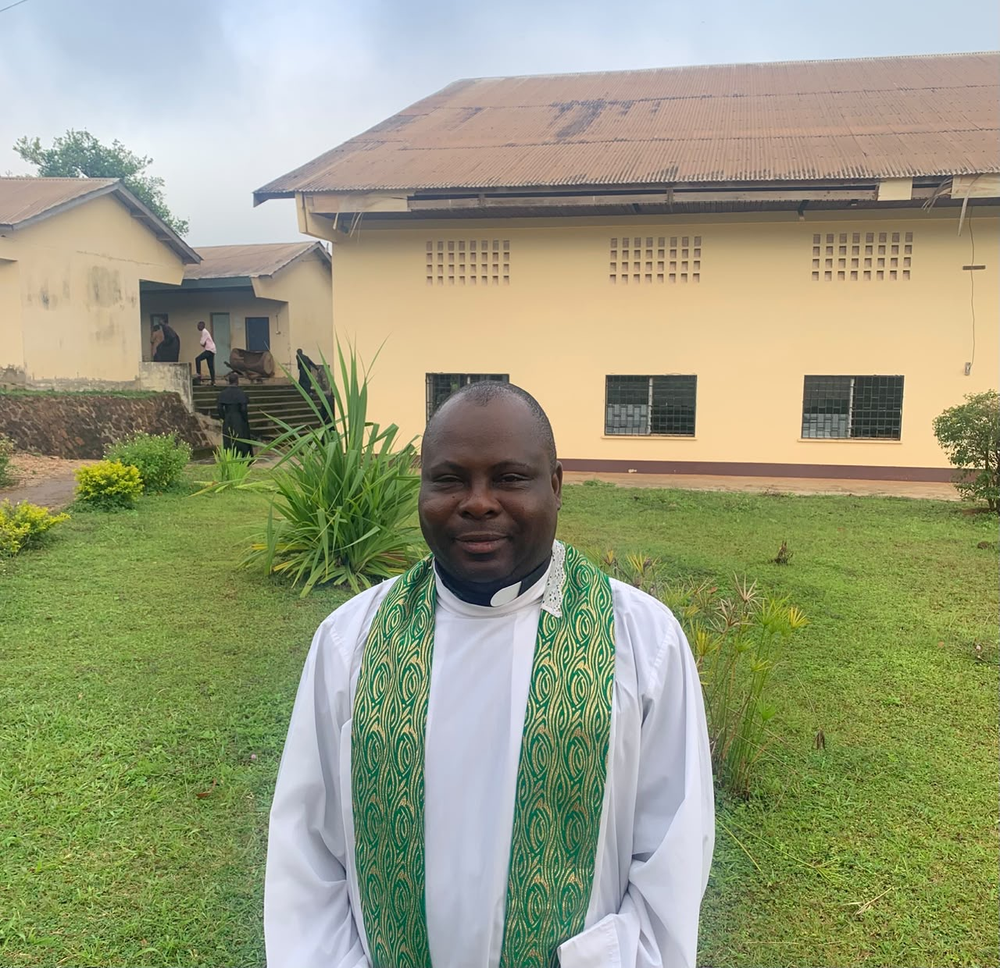

Adresse
Quartier Dabadie
Bertoua, Région de l'Est
Cameroun

Quartier Dabadie · Bertoua, Cameroun
Institut de Théologie Saint Augustin de Bertoua
Liberté · Responsabilité · Charité
Depuis 1997
Du Grand Séminaire Interdiocésain à l'Institut de Théologie Saint Augustin
Face au vieillissement du clergé expatrié, Mgr Lambert Van Heygen initie la création d'un Grand Séminaire à Bertoua. Les subsides s'élèvent à 50 200 000 FCFA.
Les Évêques de la Province Ecclésiastique établissent le Grand Séminaire Interdiocésain Notre Dame de l'Espérance, regroupant les diocèses de Doumé-Abong Mbang, Bertoua, Batouri et Yokadouma.
Le Dicastère procède à l'érection de l'Institut de Théologie Saint Augustin de Bertoua et son affiliation à la Faculté de Théologie de l'UCAC.
Face aux décès, au vieillissement et au retour des Pères spiritains néerlandais dans leur pays d'origine, Mgr Van Heygen a cherché à pallier cette pénurie en recrutant des ouvriers apostoliques en Pologne en 1976. Cela a permis l'arrivée de prêtres polonais Fidei Donum à Doumé pour compenser le nombre toujours insuffisant de pasteurs.
En 1996, la Propédeutique Saint Jean Baptiste de Doumé va désormais accueillir les aspirants au Grand Séminaire. Entre juillet 1996 et juin 1997, l'implication de Rome (52 350 000 FCFA) et un don majeur de 15 000 000 FCFA reçu d'une entreprise privée contribueront largement aux travaux de construction.
2025 - aujourd'hui · Abbé Constant Bienvenu AMBASSA - Recteur
2023 - 2025 · Mgr Justin Georges EBENGUE - actuel Évêque de Yokadouma
2018 - 2023 · Abbé Elie KENGNE (Batouri)
2011 - 2018 · Abbé Jean Parfait ATEBA (Yokadouma)
2008 - 2011 · Abbé Dieudonné Espoir ATANGANA - actuel Évêque de Nkongsamba
2003 - 2008 · Père Louis NDJANA (CICM)
1999 - 2000 · Mgr Aloys NKOUA KEK (Doumé Abong Mbang)
1996 - 1998 · Père Janusz CZERNIEJEWSKY (Polonais)
Formation sacerdotale
Une formation complète sur 9 ans selon la Ratio Fundamentalis Institutionis Sacerdotalis
3 ans de formation pour préparer les séminaristes à la réflexion critique et à la compréhension des fondements de la pensée chrétienne.
4 ans pour former les séminaristes à la compréhension profonde de la doctrine catholique dans le contexte africain.
Année académique 2025 - 2026
L'équipe de formation du Grand Séminaire Notre Dame de l'Espérance

Recteur · Responsable de l'ITSAB

Directeur de l'Institut

Père Économe

Aumônier de la liturgie et du sport

Préfet des études (Philosophie) · Bibliothèque

Chargé de la discipline · Salle informatique

Secrétaire du Séminaire et de l'ITSAB

Père spirituel . Formation humaine et intégrale · Aumônier de la culture

Chargé de la liturgie chantée
Agenda
Calendrier officiel de l'année académique du Grand Séminaire
Rentrée des formateurs (24 sept.), séminaristes Théo IV (25 sept.), puis tous les séminaristes à 17h30.
24 - 26 septembre 2026Retraite spirituelle de début d'année académique. Clôture le vendredi 2 octobre.
27 sept. - 2 oct. 2026Prise d'habits et collation des ministères. Leçon inaugurale et conseil académique le lundi 5 octobre.
4 octobre 2026Galerie


Nous Soutenir
Soutenir la Fondation Grand Séminaire, c'est contribuer à la formation de futurs prêtres et à l'expansion des infrastructures de l'Institut de Théologie Saint Augustin.
Vos dons financent les bourses d'études, l'amélioration des locaux et l'acquisition de ressources pédagogiques.
ContribuerL'Œuvre des Vocations accompagne les jeunes dans leur discernement vocationnel et soutient les séminaristes tout au long de leur formation.
En soutenant cette œuvre, vous participez à l'appel de jeunes hommes à servir l'Église.
SoutenirContact
Quartier Dabadie
Bertoua, Région de l'Est
Cameroun
+237 694 476 707
+237 222 243 233
Lun - Ven : 08h00 - 17h00
Sam : 08h00 - 12h00
Dim : Fermé